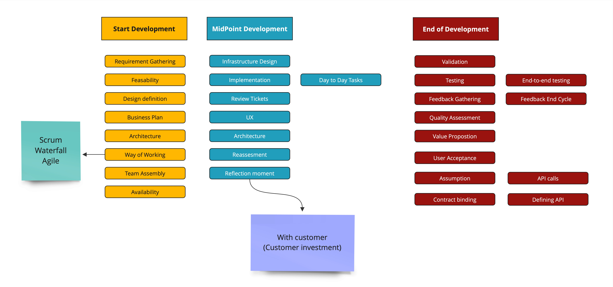

In this chapter, we go on a journey into the heart of this thesis's research. We'll find and define the tools, ontologies and frameworks for the research, which will guide our exploration.
This section is a roadmap, tracing our path from the initial spark of curiosity to the final knowledge.
Step 1:Creating the high level
ontology for scenarios
Step 2: Populate the scenario with
entities, classes and properties
Step 3:Define the workflows for
each scenario

Figure 1: Software Engineering Flow
Step 4:Visualizing the results
via graphs and input in Protégé
Step 5:Define design choices and tasks and clarify each HI task